Another week... another holiday
Karnataka... or maybe Rajasthan, India
We had been planning this three-week trip on and off for a couple of months. This year's big vacation - flights booked, hotels identified, restaurant reviews read and tourist sites investigated. We were off to Karnataka! But then the night before we were due to fly we changed our minds and the next morning we flew north, instead of South, and found ourselves instead in Rajasthan. We didn't have much of a plan, nothing booked, just a pair of light rucksacks on our backs. We were on the road again!
The main reason for the change of plan was the weather - it was still raining down South and the humidity was waivering around 100%. So we weren't particularly amused to find it raining when we landed in Jaipur. Hmmmph!
From Jaipur we headed north-west on a rickety bus to Shekhawati, a collection of small towns and villages that were once on the Silk Route. Businessmen lived here and this was the source of the wealth that built the amazing havelis still remaining today. Most are sadly crumbling now, but a few have been preserved which provide you with a window into how fantastic the place would have been in its heyday.
We stayed in the lovely Shekhawati Guesthouse. Basic but comfy mud huts, hosted by the lovely Kalpana and her husband, who invited us into their kitchen to pick up cooking tips on both nights. “You were paying good money to stay in a dung hut?” asked an Indian friend!
We headed south from there to Pushkar. We had been warned that it would be really busy and full of tourists, however we had managed to miss the famous camel fair by a few days and didn’t find it that crowded at all – or full of the un-washed hippies we had been told to expect! Our hotel, The Seventh Heaven Inn, had a wonderful roof terrace from where you could hear and see the nearby temples. We spent many hours up there chatting, sipping tea and enjoying the relaxing ambience of Pushkar. Our favourite place in Pushkar was the main ghat – where pilgrims go to wash away their sins – and where we went to sip chai and watch the sunset!
Another rickety bus, another town. This time Bundi, a real hidden treasure which hasn’t yet found its place on the tourist trail. It has a small old town centre, a large dilapidated fort and a major tank in the centre – so plenty for us to explore during our few days here. Bundi gave us a real feel of what Rajasthan must have been like years ago. It had a friendly, sleepy atmosphere, with children flying kites on rooftops, cows wandering around and monkeys stealing whatever they could from passers-by. We sat on the roadside every morning enjoying the town’s famous lassi – a yoghurt drink with spices, nuts, raisins and saffron in it and in the evening enjoyed dinner in the recently renovated Maharaja’s palace overlooking the town’s tank. Bundi’s Maharaja, though the ruler of a relatively minor area, had very powerful friends and plenty of income from his subjects to fund his rather luxurious lifestyle and so, in the evening, sitting on the palace’s rooftop sipping G&T we had ourselves a little taste of what he must have felt like. He is elsewhere these days but his palace has been leased out to another local landowner who now runs it as a hotel. ~On one night we enjoyed the palace’s signature dish of tandoori chicken marinated for 24 hours, which is something that will bring us back to Bundi one day.
We didn’t want to leave the peace of Bundi, but needed to move on and Udaipur was calling. Udaipur was by far the most touristy stop on this trip so we figured it best to get a suite in an old palace on the lake’s edge. So that’s exactly what we did and loved every minute of it. At 5pm every evening we were on our own terrace, looking out over the gleamingly white Lake Palace – a view that has been described as the most romantic in India – and of course, sipping a nice cool beer until the sun was put to bed.
One fun morning was spent looking over the Maharaja of Udaipur’s fleet of luxury cars. It contained personalised Rolls Royces and Mercedes, all complete with the family’s logo – a sun – as they believe that they are directly descended from the sun! The thing that caught our attention was an old Triumph Herald that they were restoring. The mechanic was impressed to hear that Nathan used to have one and took time to show us all the pieces he had been making to bring it back to life once more.
From Udaipur we headed to Ahmedabad - but that's for another entry...
The main reason for the change of plan was the weather - it was still raining down South and the humidity was waivering around 100%. So we weren't particularly amused to find it raining when we landed in Jaipur. Hmmmph!
From Jaipur we headed north-west on a rickety bus to Shekhawati, a collection of small towns and villages that were once on the Silk Route. Businessmen lived here and this was the source of the wealth that built the amazing havelis still remaining today. Most are sadly crumbling now, but a few have been preserved which provide you with a window into how fantastic the place would have been in its heyday.
We stayed in the lovely Shekhawati Guesthouse. Basic but comfy mud huts, hosted by the lovely Kalpana and her husband, who invited us into their kitchen to pick up cooking tips on both nights. “You were paying good money to stay in a dung hut?” asked an Indian friend!
We headed south from there to Pushkar. We had been warned that it would be really busy and full of tourists, however we had managed to miss the famous camel fair by a few days and didn’t find it that crowded at all – or full of the un-washed hippies we had been told to expect! Our hotel, The Seventh Heaven Inn, had a wonderful roof terrace from where you could hear and see the nearby temples. We spent many hours up there chatting, sipping tea and enjoying the relaxing ambience of Pushkar. Our favourite place in Pushkar was the main ghat – where pilgrims go to wash away their sins – and where we went to sip chai and watch the sunset!
Another rickety bus, another town. This time Bundi, a real hidden treasure which hasn’t yet found its place on the tourist trail. It has a small old town centre, a large dilapidated fort and a major tank in the centre – so plenty for us to explore during our few days here. Bundi gave us a real feel of what Rajasthan must have been like years ago. It had a friendly, sleepy atmosphere, with children flying kites on rooftops, cows wandering around and monkeys stealing whatever they could from passers-by. We sat on the roadside every morning enjoying the town’s famous lassi – a yoghurt drink with spices, nuts, raisins and saffron in it and in the evening enjoyed dinner in the recently renovated Maharaja’s palace overlooking the town’s tank. Bundi’s Maharaja, though the ruler of a relatively minor area, had very powerful friends and plenty of income from his subjects to fund his rather luxurious lifestyle and so, in the evening, sitting on the palace’s rooftop sipping G&T we had ourselves a little taste of what he must have felt like. He is elsewhere these days but his palace has been leased out to another local landowner who now runs it as a hotel. ~On one night we enjoyed the palace’s signature dish of tandoori chicken marinated for 24 hours, which is something that will bring us back to Bundi one day.
We didn’t want to leave the peace of Bundi, but needed to move on and Udaipur was calling. Udaipur was by far the most touristy stop on this trip so we figured it best to get a suite in an old palace on the lake’s edge. So that’s exactly what we did and loved every minute of it. At 5pm every evening we were on our own terrace, looking out over the gleamingly white Lake Palace – a view that has been described as the most romantic in India – and of course, sipping a nice cool beer until the sun was put to bed.
One fun morning was spent looking over the Maharaja of Udaipur’s fleet of luxury cars. It contained personalised Rolls Royces and Mercedes, all complete with the family’s logo – a sun – as they believe that they are directly descended from the sun! The thing that caught our attention was an old Triumph Herald that they were restoring. The mechanic was impressed to hear that Nathan used to have one and took time to show us all the pieces he had been making to bring it back to life once more.
From Udaipur we headed to Ahmedabad - but that's for another entry...

The mooli man

The Kachori-wallah in Nawalgarhm Shekhawati
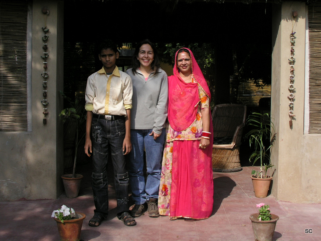
Shahrukh, Sue and Kalpana at The Shekhawati Guesthouse
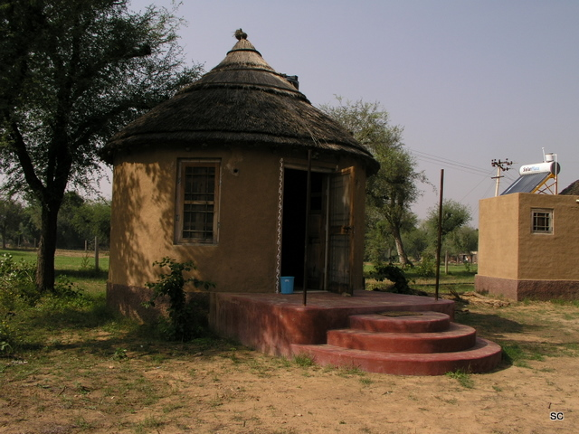
Our mud hut

A restored haveli

View from a haveli
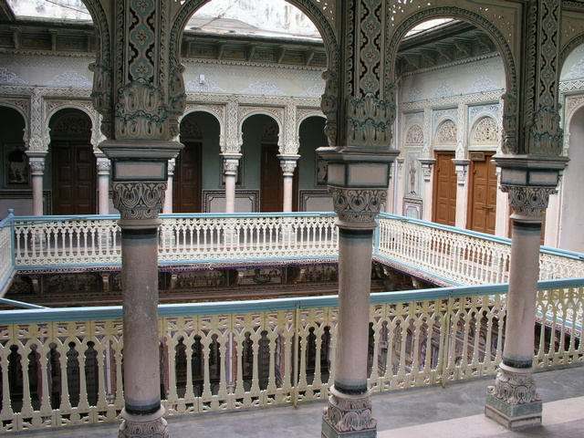
Another restored haveli
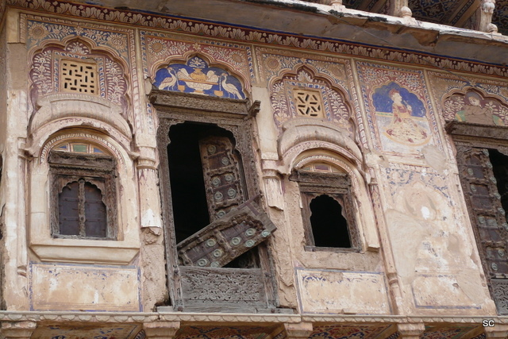
Faded grandeur - a haveli in Nawalgarh
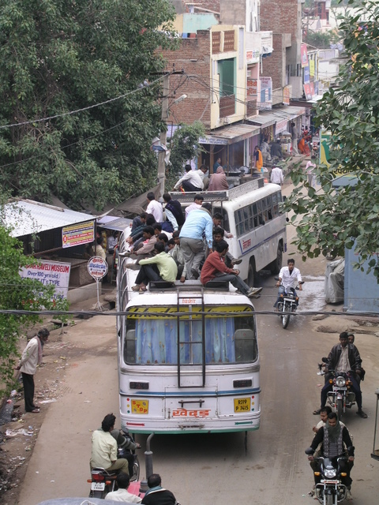
One of those rickety buses

Pushkar ghats
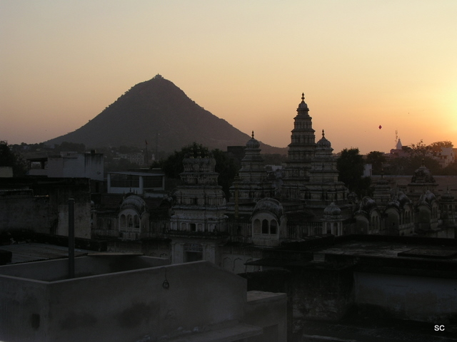
View from The Seventh Heaven Inn

A fellow passenger on the bus to Bundi

Bundi tank as the sun begins to set
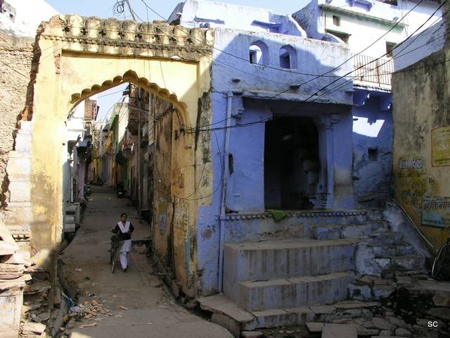
A wander around Bundi

It's not just us wandering around Bundi - there are other tourists!
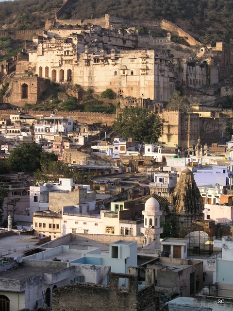
Bundi Fort and town

Mr Sathi's famous Lassi of Bundi
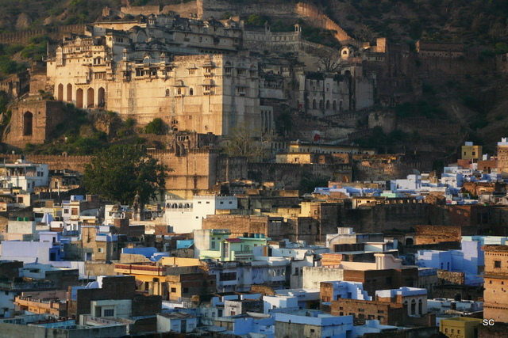
Bundi town and fort

Chaurasi Khambon ki Chhatri or the 84-Pillared Cenotaph, Bundi

Chaurasi Khambon ki Chhatri or the 84-Pillared Cenotaph, Bundi
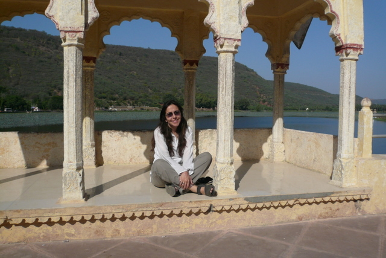
Sue relaxing in Bundi

Nathan enjoying the same view that spurred Kipling on to finish Kim
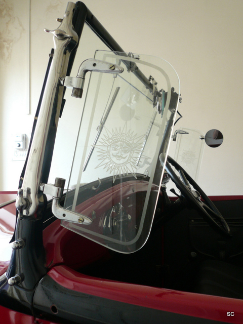
Direct descendants of the sun

The silver lady
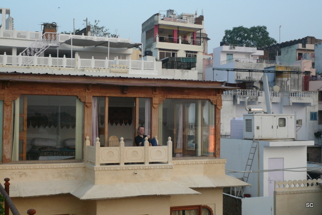
Our suite in Udaipur
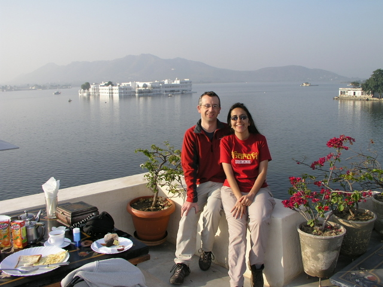
Breakfast in Udaipur
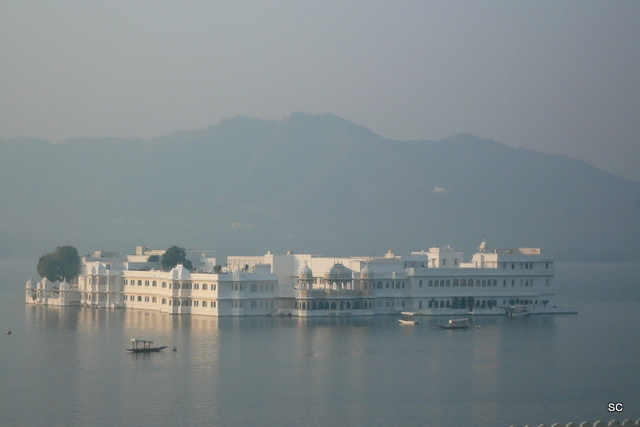
The Lake Palace, Udaipur

Lining the kite strings with glass - ready for kite fighting
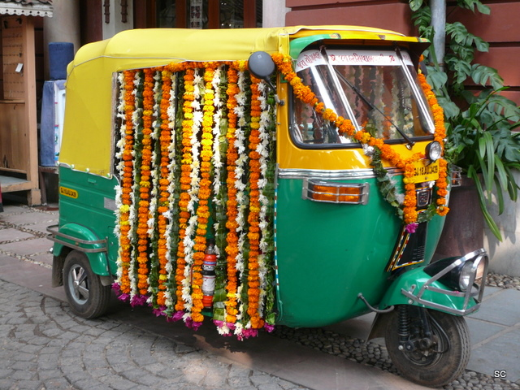
Bridal limousine - Indian style!

It gets cold in Ahmedabad!